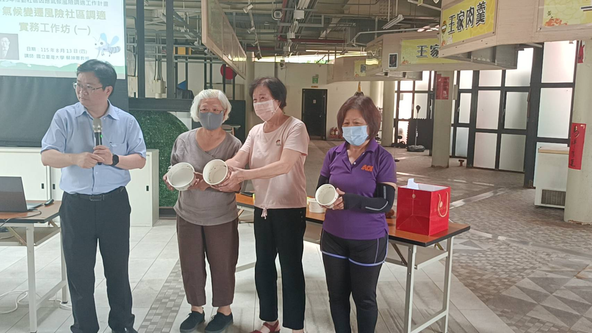
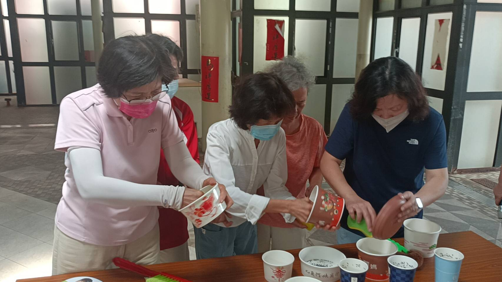
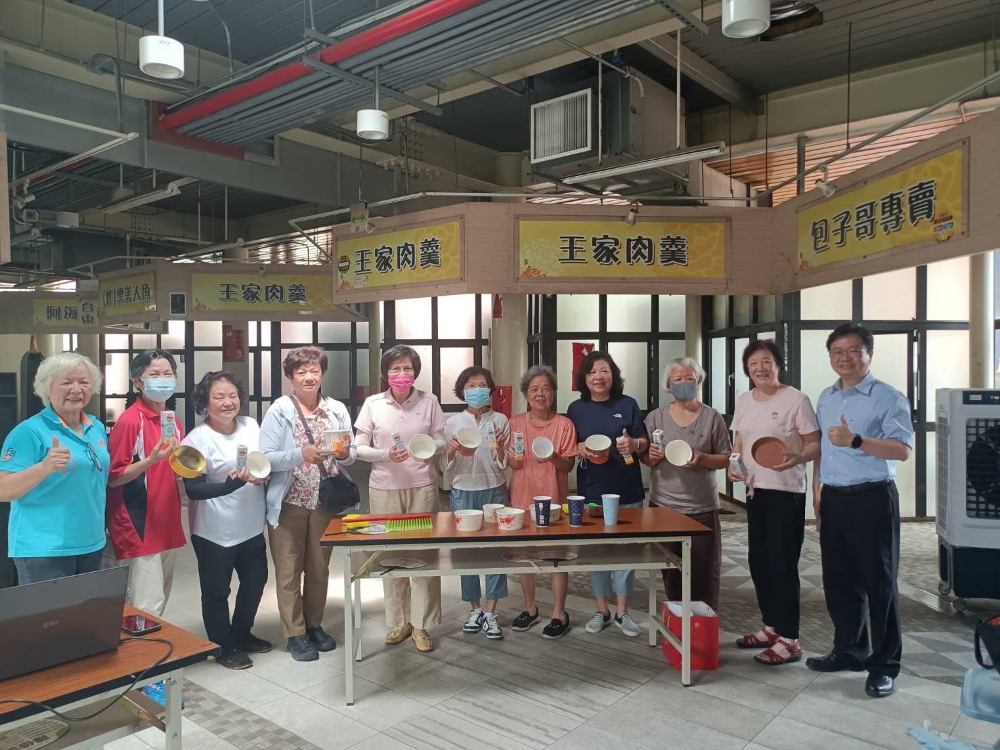
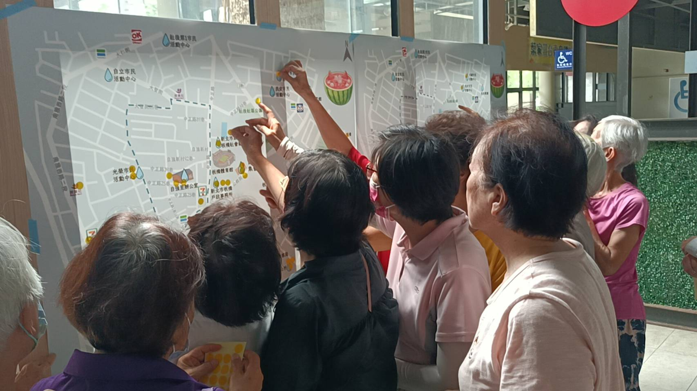

隨著氣候變遷，極端高溫與降雨模式的改變已深刻影響我們的生活環境。病媒蚊與鼠類的孳生，以及連續熱浪帶來的熱危害風險，正考驗著社區的調適能力，本計畫將以「實務操作」為核心，帶領社區居民將調適策略轉化為具體行為，從基礎的孳生源判別到實際動手刷洗孳生源，深入引導社區居民邊調適之細節，並帶動居民共同設計社區專屬的涼爽和飲水地圖，齊心打造一座能主動適應氣候變遷、具備實戰調適力的韌性健康社區！
整合里內公共飲水點與友善奉茶店家，鼓勵自備水壺、隨時補充水分預防熱危害。
由居民與志工共同提供點位，建立持續更新的社區調適資料庫。
鼓勵每週巡視住家周邊的環境，身體力行「巡倒清刷﹞，避免蚊蟲孳生。
記錄我們在自強里進行氣候變遷風險社區調適實務工作坊的精彩瞬間：



